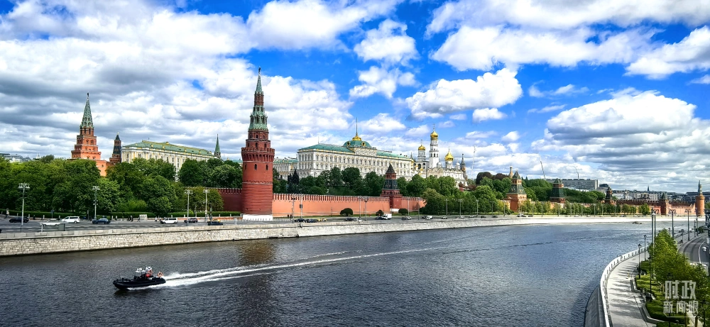
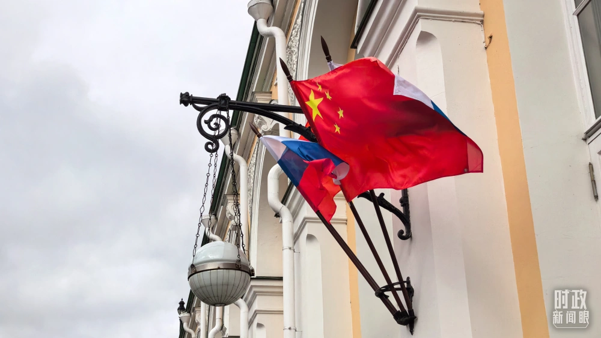
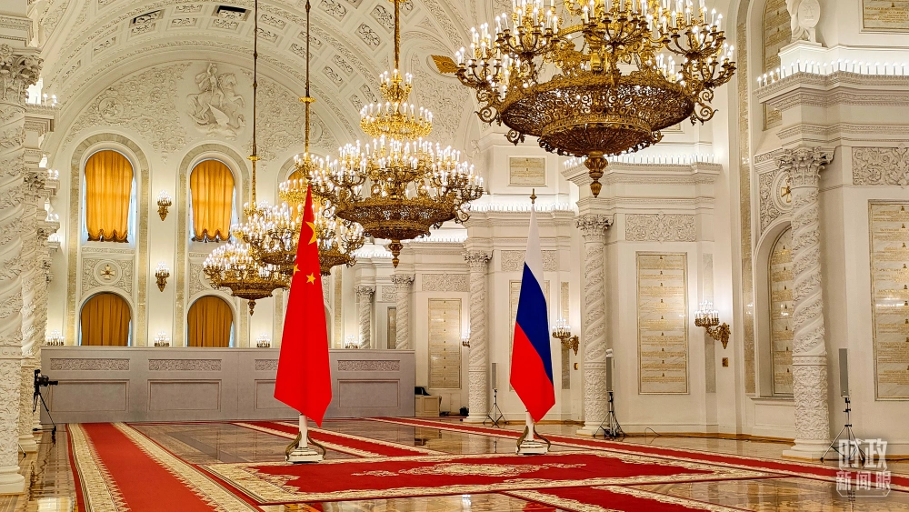
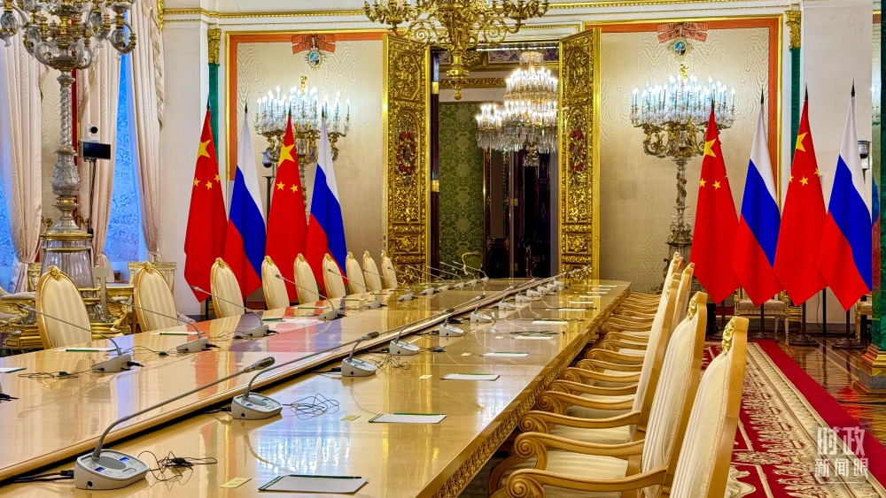
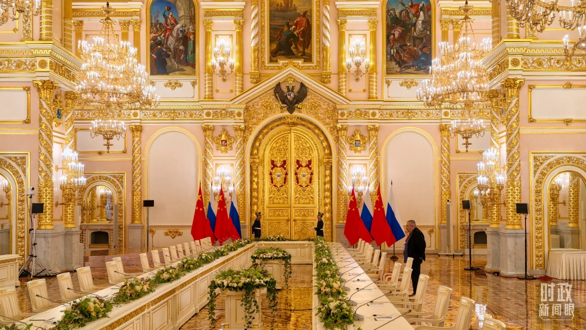
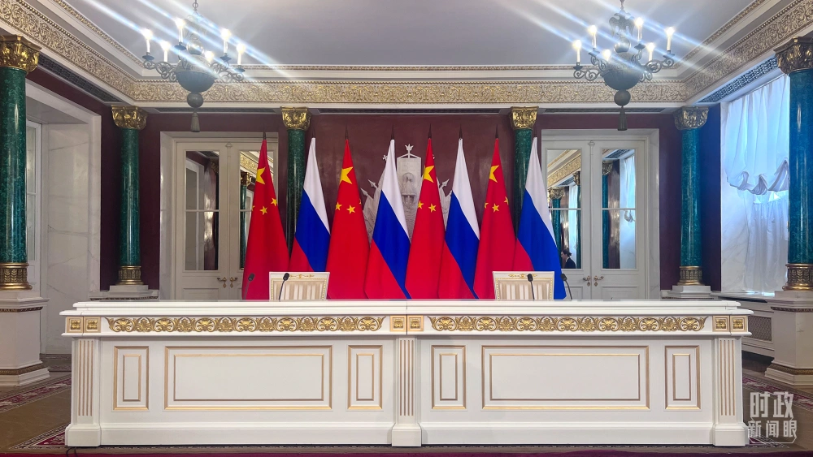
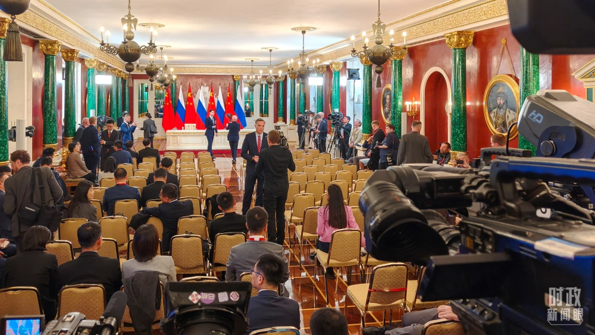
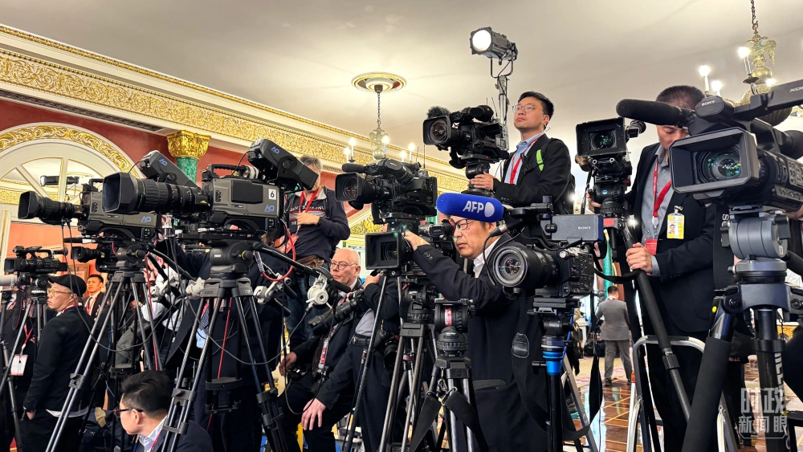
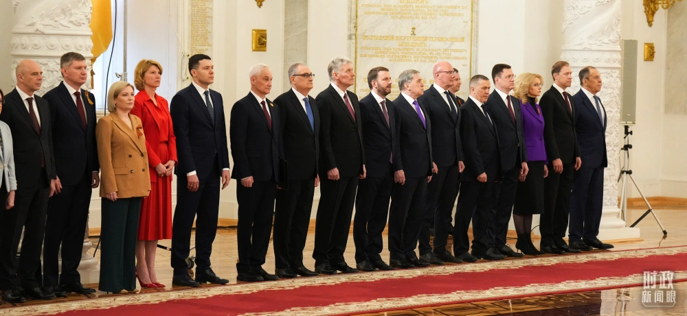
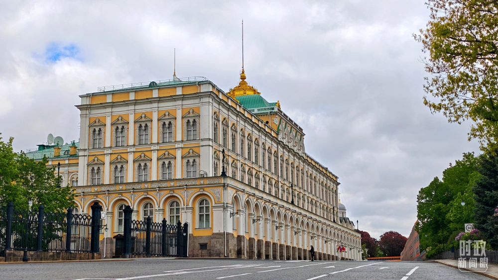

在这个“梨花开遍了天涯”的季节，拥有800多年历史的克里姆林宫，再次见证中俄交往的一个重要时刻。2013年3月，习近平就任国家主席后出访的首个国家就是俄罗斯。今年这次莫斯科之行，是习主席第11次到访俄罗斯，也是两国元首今年首次面对面会晤。  8日上午，在克里姆林宫二层的乔治大厅，普京总统为习主席举行隆重欢迎仪式。两国元首从两侧沿红地毯健步走入大厅中央，亲切握手合影。2019年、2023年习主席对俄罗斯进行国事访问时，普京总统也是在这里为习主席举行隆重欢迎仪式。  习主席当天在克里姆林宫的活动从上午持续到下午。两国元首先后举行小范围、大范围会谈。会谈后，两国元首共同出席签字和合作文本交换仪式，并共同会见记者。当天中午，普京总统还为习主席举行了欢迎宴会。  当天下午，习主席同普京总统在克里姆林宫总统办公室进行茶叙。 这是一项特别安排。去年5月，习主席在中南海同普京总统举行小范围会晤时，二人也曾共品香茗，在轻松的氛围中就共同关心的战略性问题进行深入交流。
当天，在习近平主席强调的三个“度”当中，首先是全面提升中俄关系的高度。 高度，重点体现在中俄关系的特殊性和战略性。习主席曾指出，两国关系远远超出双边范畴，对世界格局和人类前途命运至关重要。2019年6月习主席访问俄罗斯时，两国元首共同宣布发展中俄新时代全面战略协作伙伴关系。  习主席此次访俄，两国元首共同签署《中华人民共和国和俄罗斯联邦在纪念中国人民抗日战争、苏联伟大卫国战争胜利和联合国成立80周年之际关于进一步深化中俄新时代全面战略协作伙伴关系的联合声明》。  登高望远天地阔。在同普京总统共见记者时，习主席指出，面对世界之变、时代之变、历史之变，中俄两国要牢牢把握双边关系前进方向和人类社会发展大势，挺膺担当，全面协作，为促进两国发展振兴、维护国际公平正义作出新的更大贡献。 普京在会谈时表示，俄中关系建立在相互平等、相互尊重基础上，不针对第三方，不受一时一事影响。坚定不移推动俄中关系发展、扩大互利合作是俄方战略选择。  习主席此次访俄，不仅聚焦两国自身的发展振兴，也谈到面向世界的“特殊责任”。 在同普京总统会谈时，习主席指出，当前，面对国际上的单边主义逆流和强权霸凌行径，中方将同俄方一道，肩负起作为世界大国和联合国安理会常任理事国的特殊责任，挺膺担当，共同弘扬正确二战史观，维护联合国权威和地位，坚定捍卫二战胜利成果，坚决捍卫中俄两国及广大发展中国家权益，携手推动平等有序的世界多极化、普惠包容的经济全球化。  近年来，中俄签署关于当前世界形势和重大国际问题的联合声明、关于加强当代全球战略稳定的联合声明等，以行动书写和平与发展的时代主题。  此次中俄双方交换的20多份双边合作文本当中，也涵盖了全球战略稳定、维护国际法权威等领域，进一步以实际行动彰显大国担当。
新时代以来，中俄两国关系定位持续提升，合作内涵日益丰富。习近平主席此访进一步丰富战略协作的内涵。这是全面提升中俄关系“维度”的应有之义。  在当天的会谈现场，两国元首听取了两国有关部门负责人关于各领域合作情况的汇报。习主席指出，双方要坚持合作大方向，排除外部干扰，让合作“稳”的基础更坚实、“进”的动能更充足。 两国元首共同见证了中俄双方交换20多份双边合作文本，涵盖生物安全、投资保护、数字经济、检疫、电影合作等领域。 在共见记者时，习主席强调，中俄双方要继续深化各领域务实合作，夯实全面战略协作的物质基础，不断造福两国人民，为全球发展注入更强劲动能。  在会谈时，习主席表示，两国政治互信根基越扎越深，务实合作纽带越系越牢，人文交流和地方交往越来越红火，新时代的中俄关系更加从容自信、稳定坚韧。 去年和今年两年是中俄元首确定的“中俄文化年”。此访期间，习主席向“和平薪火 时代新章——纪念中国人民抗日战争和苏联伟大卫国战争胜利80周年中俄人文交流活动”致贺信，希望两国媒体共担使命、携手并进，多开展连民心、接地气、有温度的人文交流。 内涵越丰富，维度越广泛，中俄关系的动力就越强劲。